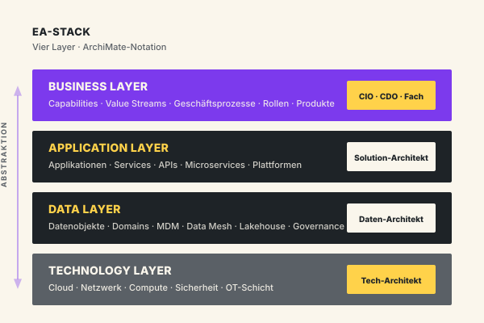
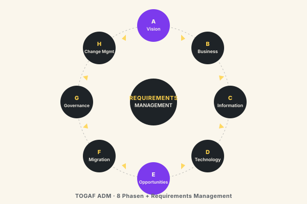
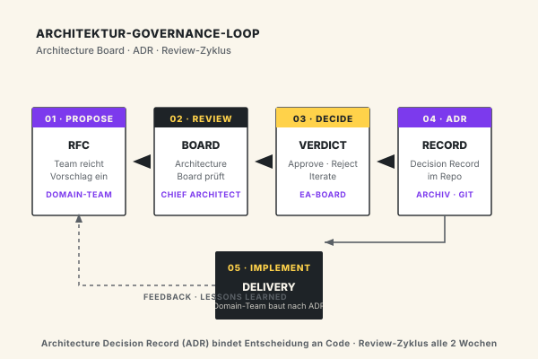

Architektur, die die › Strategie trägt.
Enterprise Architecture Management und IT-Architekturberatung — Ziel-Architekturen, Domain-Schnitt und IT-Bebauungspläne, die zu Strategie, Roadmap und Liefer-Realität passen. Für deutschen Mittelstand und DAX-Konzerne, anbieter-unabhängig.
Architektur ohne Wirkung ist das häufigste EA-Problem.
EAM-Funktionen liefern Modelle, die niemand nutzt. Die Realität entwickelt sich an der Architektur vorbei. Die Ursachen sind wiederkehrend — und sie liegen selten in der Methodik.
Architektur ohne Anschluss an Projekte
EAM modelliert Soll-Architekturen, Projekte liefern an ihnen vorbei. Ohne harten Architektur-Governance-Anschluss bleibt EA ein Papierschrank.
Tooling-Fokus statt Wirkungs-Fokus
Großes Budget in Sparx EA, LeanIX, Ardoq — aber niemand weiß, welche Entscheidungen aus den Modellen kommen sollen. Tooling ohne Use-Case ist Selbstzweck.
Zu viel Detail, zu wenig Steuerung
EA-Modelle gehen auf Komponenten-Tiefe — und werden unwartbar. Was fehlt: eine angemessen abstrakte Sicht, die wirklich gesteuert werden kann.
Strategie und Architektur driften
Strategie redet über Geschäftsmodelle, Architektur über Systeme. Die Übersetzung — Capability Map, Value Stream, Domain-Schnitt — fehlt. Architektur reagiert, statt zu führen.
Vier Leistungsfelder — von EAM-Aufbau bis Domain-Architektur.
Wir liefern Architektur-Beratung mit Wirkung — vom Aufbau einer EAM-Funktion bis zur konkreten Domain-Architektur für ein laufendes Programm.
EAM-Aufbau & Operating Model
Sie wollen eine EAM-Funktion aufbauen oder restrukturieren. Wir liefern: Operating Model, Rollen, Governance, Tooling-Auswahl, Anbindung an Projekt-Portfolio. Wirkungs-fokussiert.
Ziel-Architektur & Bebauungsplan
Soll-Architektur für ein konkretes Vorhaben oder Geschäftsbereich. Capability Map, Domain-Schnitt, Anwendungs- und Daten-Bebauung, Integrations-Architektur, Migrations-Plan.
IT-Architekturberatung & Domain-Modelle
Auf Komponenten-Ebene: Microservices-Schnitt, API-Architektur, Daten-Architektur, Cloud-Architektur. Konkrete Architektur-Entscheidungen für laufende Vorhaben.
Architektur-Reviews & Audits
Externer Architektur-Review für laufende Programme: Tragfähigkeit, Risiken, Anschluss an Strategie. Output: Architektur-Audit mit klaren Empfehlungen.

Fünf Phasen — vom Reife-Audit bis zur etablierten Funktion.
Sie entscheiden nach jeder Phase, ob die nächste sinnvoll ist. Sichtbare Ergebnisse in jeder Phase — kein 12-Monats-EA-Block.
EA-Reife-Audit
Bestehende EAM-Arbeit erheben, Stakeholder, Tooling, Wirkung. Output: Reifegrad-Bewertung mit klaren Lücken.
EA-Operating-Model
Operating Model, Rollen, Governance-Anschluss an Projekt-Portfolio und Strategie-Prozess. Tooling-Entscheidung mit Use-Case-Bindung.
Capability Map & Domain-Schnitt
Business Capability Map, Domain-Schnitt, Anwendungs- und Daten-Bebauung. Abgenommene Ziel-Architektur.
Implementierung & Anschluss
EA-Funktion arbeitet, Architektur-Reviews laufen, Anschluss an Projekt-Governance ist hergestellt. Erste Wirkung sichtbar.
Übergabe & Coaching
EA-Funktion ist eigenständig. Übergabe an Ihre Chief Architect, optional Sparring 3–6 Monate.
Architektur-Anlässe, in denen wir wiederkehrend beraten.
Eine Auswahl der Anlässe, in denen wir am häufigsten Architektur-Mandate übernehmen.
EAM-Aufbau oder -Restart
Sie haben keine EA-Funktion oder wollen eine bestehende neu aufstellen. Operating Model, Governance, Tooling — von der grünen Wiese oder im Reset.
Ziel-Architektur für ERP-Modernisierung
S/4HANA-Migration, ERP-Konsolidierung. Domain-Schnitt, Integrations-Architektur, Migrations-Strategie.
Cloud-Architektur & Hybrid-Modelle
Cloud-Strategie, Workload-Architektur, Hybrid-Cloud, Sovereign Cloud. Anbieter-unabhängig.
Daten-Architektur & Data Mesh
Data-Architecture-Pattern: Data Lake, Lakehouse, Data Mesh, MDM. Domain-orientierte Daten-Architektur.
API-First & Plattform-Architektur
Microservices-Schnitt, API-First-Strategie, Composable Architecture. Plattform als Voraussetzung für Skalierung.
Carve-Out & Post-Merger
Architektur-Trennung oder -Integration nach M&A. Hoher Termindruck, harte Cut-Over-Logik.
Security-Architektur & Zero Trust
Architektur für Zero-Trust-Modelle, Identity-Architektur, Netzwerk-Segmentierung.
Architektur-Review für Großprogramme
Externer Architektur-Audit für laufende Transformations- oder Digitalisierungs-Programme.
Wo wir Enterprise Architecture wiederkehrend liefern.
EA-Muster unterscheiden sich erheblich nach Branche. Die Branchen, in denen wir am häufigsten mandatiert sind:
Banken & Versicherungen
Kernbanken-Architektur, regulatorische Anforderungen (BAIT, DORA, MaRisk), Architektur-Governance. Sehr reife EAM-Funktionen — wir verstärken, nicht ersetzen.
Versicherungen & Finanzdienstleister
Bestandssysteme, Schaden-Plattformen, Vertriebs-IT. Hohe Integrations-Komplexität, harte regulatorische Anker.
Öffentlicher Sektor & Verwaltung
Fachverfahrens-Architektur, Registermodernisierung, OZG-Architektur. Vergabe-Realität und EVB-IT prägen die Architektur-Sprache.
Produzierende Industrie & Maschinenbau
OT/IT-Architektur, MES-Integration, Smart-Factory-Architektur. Wir bringen produktionsnahe Realität in EA-Modelle.
Pharma & Medizintechnik
GxP-konforme Architektur, MDR-Architektur, Validierungs-Anker. EA-Modelle müssen auditierbar sein.
Energie & Versorger
Netzleitsystem-Architektur, Marktrollen-Trennung, Energiehandel-Architektur. Regulatorische Realität prägt EAM.
Was unsere EA-Beratung von der Standardware unterscheidet.
Wirkungs-fokussiert statt Modell-fokussiert
Wir liefern Modelle, die zu Entscheidungen führen. Nicht ein Repository für Repository-Sake. Jedes EA-Artefakt hat einen klaren Anwendungs-Fall.
TOGAF und ArchiMate verbindlich
Wir arbeiten mit etablierten Standards. TOGAF-zertifizierte Architekten, ArchiMate-Notation, anschlussfähig an Ihre EA-Community.
Anbieter- und Tool-unabhängig
LeanIX, Sparx EA, Ardoq, BiZZdesign — wir wählen nach Anforderung, nicht nach Partnerschaft. Sie zahlen für Beratung, nicht für Lizenz-Vermittlung.
Anschluss an Strategie und Projekte
EA ist nur wirksam, wenn sie an Strategie und Projekt-Portfolio andockt. Wir bauen die Governance-Anschlüsse, nicht nur das EAM-Modell.
Architektur-Reviews mit Senior-Tiefe
Unsere Architektur-Auditoren haben 15+ Jahre Praxis. Sie sehen Architektur-Risiken, die nicht in Standard-Checklisten stehen.
Übergabe in Ihre Chief Architect Funktion
Wir wollen keine Dauer-Mandate. Wir bauen Ihre EAM-Funktion auf, trainieren Ihre Architekten und ziehen ab. Übergabe ist Teil des Vorgehens.
Drei Standards, die unsere EA-Beratung verbindlich anwendet.
Wir arbeiten mit etablierten EA-Standards — damit Ergebnisse anschlussfähig sind und Ihre interne EA-Community sie weitertragen kann.
TOGAF
Standard-Methode für Enterprise Architecture. Architecture Development Method (ADM) für strukturiertes Vorgehen. TOGAF-zertifizierte Architekten im Team.
ArchiMate
Notations-Standard für EA. Eindeutig, austauschbar zwischen Tools, anschlussfähig an Ihre bestehenden Modelle. Verbindliche Sprache für Business, Application und Technology Layer.
NIST · BIAN · IT4IT
Domain-spezifische Standards: BIAN für Banking, IT4IT für IT-Service-Management, NIST für Security-Architektur. Wir wenden den Standard an, der zu Ihrer Branche passt.
TOGAF ADM in der Praxis — und das Architektur-Board, das Entscheidungen bindet.
Enterprise Architecture wirkt nur, wenn Methode und Governance ineinandergreifen. Wir nutzen die TOGAF Architecture Development Method (ADM) als roten Faden und das Architektur-Board mit Architecture Decision Records (ADRs) als operatives Steuerungsinstrument. Das ist der Unterschied zwischen Modellen im Repository und Entscheidungen im Quellcode.
Was ist Enterprise Architecture eigentlich — und was nicht?
Enterprise Architecture ist die ganzheitliche Sicht auf Unternehmen, IT und Veränderung. Sie verbindet vier Architektur-Ebenen zu einem konsistenten Bild: Business Architecture (Capabilities, Value Streams, Geschäftsprozesse), Application Architecture (Applikations-Landschaft, Services, APIs), Data Architecture (Datenobjekte, Domains, Bewegungs- und Speicherlogik) und Technology Architecture (Cloud, Netzwerk, Infrastruktur, OT-Schicht). Enterprise Architecture umfasst also deutlich mehr als reine IT-Architektur — sie übersetzt strategische Absicht in eine tragfähige technische Realität.
Was Enterprise Architecture nicht ist: ein Repository-Selbstzweck, eine schicke ArchiMate-Bildersammlung oder eine Stabsstelle ohne Mandat. EA ist ein Steuerungs-Instrument für den CIO und die Geschäftsführung — mit klaren Entscheidungs-Vorbereitungen, klaren Eskalations-Pfaden und klar zugeordneten Konsequenzen. Wir bauen Enterprise Architecture immer so auf, dass jedes Artefakt einer Entscheidung dient. Modelle, die keine Entscheidung tragen, modellieren wir nicht.
Was macht ein Enterprise-Architekt im Alltag?
Ein Enterprise-Architekt arbeitet auf drei Ebenen gleichzeitig: er bereitet Architektur-Entscheidungen für den CIO und das Architektur-Board vor, er begleitet laufende Programme als Architektur-Sparringspartner, und er pflegt das Architektur-Repository als Wissens-Basis. In einer 40-Stunden-Woche entfallen typischerweise 30 bis 40 Prozent auf Reviews und Board-Vorbereitung, 30 Prozent auf Programm-Begleitung, 20 Prozent auf Modellierung und Repository-Pflege, und 10 bis 20 Prozent auf Community-Arbeit und Mentoring nachgelagerter Solution-Architekten.
Gute Enterprise-Architekten sind keine reinen Modellierer. Sie sind Übersetzer zwischen Geschäft und IT, zwischen Strategie und Liefer-Realität, zwischen den vier Architektur-Layern. Sie kennen TOGAF und ArchiMate als Handwerk — aber ihr eigentliches Werkzeug ist das gut vorbereitete Architektur-Gespräch.
Welche Frameworks gibt es für Enterprise Architecture?
Der De-facto-Standard ist TOGAF (The Open Group Architecture Framework) mit der Architecture Development Method (ADM) als Vorgehensmodell und einem umfangreichen Content-Framework. TOGAF ist offen, anbieter-unabhängig und in der EA-Community breit verankert — TOGAF-zertifizierte Architekten sind am Markt verfügbar. Daneben sind relevant: Zachman Framework als Ontologie-Raster, das die EA-Sicht systematisch entlang der sechs Fragewörter (Was, Wie, Wo, Wer, Wann, Warum) zerlegt; Federal Enterprise Architecture Framework (FEAF) für die öffentliche Verwaltung; Gartner Enterprise Architecture Framework als pragmatische Variante mit starkem Strategie-Bezug; und branchenspezifisch BIAN (Banking), IT4IT (IT-Service-Management), SCOR (Supply Chain).
Als Notations-Standard hat sich ArchiMate durchgesetzt — wie TOGAF von The Open Group getragen, formal definiert und in allen relevanten EA-Tools (Sparx EA, BiZZdesign, Ardoq, LeanIX) unterstützt. Wir nutzen ArchiMate für alle Architektur-Modelle, weil es Modelle zwischen Tools austauschbar macht und Ihre interne EA-Community sie ohne Schulung weitertragen kann.
Was kostet Enterprise-Architecture-Beratung — eine ehrliche Übersicht
Die belastbare Antwort hängt am Vorhaben. Drei realistische Größenordnungen aus unserer Praxis: ein EA-Reife-Audit mit Stakeholder-Interviews, Repository-Sichtung und Reifegrad-Bewertung liegt bei 20.000 bis 40.000 Euro und dauert vier bis sechs Wochen. Der Aufbau einer EAM-Funktion inklusive Operating Model, Tooling-Entscheidung und Anbindung an das Projekt-Portfolio liegt bei 80.000 bis 200.000 Euro über sechs Monate. Eine Ziel-Architektur für ein konkretes Programm mit Capability Map, Domain-Schnitt, Bebauungsplan und Migrations-Strategie liegt bei 50.000 bis 150.000 Euro.
Versteckte Kosten gibt es bei uns nicht: keine Lizenz-Vermittlungs-Provisionen, keine Hardware-Margen, keine Folge-Beratung als Pflichtprogramm. Sie zahlen Tagessätze für Senior-Architekten, transparent, vorab definiert. Bei förderfähigen Vorhaben prüfen wir die BAFA-Förderung und übernehmen die Antrags-Logik.

TOGAF ADM — pragmatisch, nicht dogmatisch
Phase A (Vision) klärt Auftrag, Stakeholder und Architektur-Prinzipien — typischerweise in 2 bis 3 Wochen. Phasen B, C und D liefern die Business-, Application-/Data- und Technology-Architektur als Soll-Bild. Die spannenden Phasen sind E (Opportunities & Solutions) und F (Migration Planning): hier wird aus dem Architektur-Modell ein priorisierter Programm-Plan mit Architektur-Bausteinen, Abhängigkeiten und einer realistischen Migrations-Reihenfolge.
Phase G (Implementation Governance) ist der Hebel, an dem die meisten EAM-Funktionen scheitern. Wir verankern Architektur-Reviews in der Programm-Steuerung und stellen sicher, dass Liefer-Teams die Soll-Architektur nicht umgehen, ohne dass es das Architektur-Board sieht.
Architektur-Board — wer entscheidet, wie schnell
Das Architecture Board ist das einzige Gremium mit Mandat für verbindliche Architektur-Entscheidungen. Wir besetzen es bewusst klein — typischerweise sechs bis acht Personen: Chief Architect, je ein Lead-Architekt pro Layer (Application, Data, Technology), ein Fach-Vertreter aus der Business-Architektur, ein Security-Architekt und ein Vertreter der Liefer-Organisation.
Das Board tagt alle zwei Wochen, 90 Minuten. Vorab eingereichte RFCs (Requests for Comments) werden gelesen, im Termin diskutiert, entschieden. Kein Entscheidungs-Stau, kein Eskalations-Theater — sondern einklagbare Termine für Architektur-Entscheidungen.

Architecture Decision Records — Entscheidungen, die haften
Ein Architecture Decision Record (ADR) ist ein kurzes Dokument — eine bis zwei Seiten Markdown — das eine getroffene Architektur-Entscheidung mit Kontext, Optionen, Begründung und Konsequenzen festhält. ADRs leben im Git-Repository neben dem Code, nicht in einem separaten EA-Tool. Damit wird Architektur-Wissen versionierbar, auffindbar und überprüfbar.
Wir führen ADRs in jedem EAM-Aufbau ein: ADR-Template, Namens-Konvention, Status-Lebenszyklus (Proposed, Accepted, Superseded, Deprecated), Verlinkung in die ArchiMate-Modelle. Nach drei bis sechs Monaten Praxis sind 30 bis 80 ADRs typisch — und der CIO hat erstmals einen lückenlosen Audit-Trail über bedeutende Architektur-Entscheidungen.
Reviews — Architecture Compliance Review
Reviews sind das operative Werkzeug der Governance. Wir unterscheiden drei Review-Typen mit klaren Auslösern:
- Initial Architecture Review beim Programm-Start — prüft Anschluss an Strategie und Ziel-Architektur, bevor Budget bewilligt wird.
- Architecture Compliance Review in den Programm-Increments — prüft, ob die Lieferung der Soll-Architektur folgt oder dokumentiert begründet abweicht.
- Post-Implementation Review nach Go-Live — prüft, ob die gebaute Architektur dem ADR entspricht und ob Lessons Learned ins Repository zurückfließen.
Jeder Review endet mit einem Beschluss: Go, Conditional Go (mit ADR-pflichtigen Auflagen) oder No-Go. Kein Review endet mit "wir schauen das nochmal an" — das ist der häufigste Ausweich-Mechanismus schwacher EAM-Funktionen.
Fragen, die in den ersten Gesprächen immer kommen.
Was ist Enterprise Architecture?
Was macht ein Enterprise-Architekt?
Was kostet Enterprise-Architecture-Beratung?
Welche Frameworks gibt es für Enterprise Architecture?
Wie viel kostet Enterprise Architecture Beratung?
Wie lange dauert der Aufbau einer EAM-Funktion?
Brauchen wir wirklich eine EAM-Funktion?
Welches EA-Tool empfehlen Sie?
Was ist der Unterschied zwischen Enterprise Architecture und IT-Architektur?
Wir haben schon eine EAM-Funktion, aber sie wirkt nicht. Hilft das?
Wie integrieren Sie EA in agile Vorhaben?
Können Sie auch nur ein Architektur-Audit machen?
Enterprise Architecture › starten.
Der erste Schritt ist ein Erstgespräch von 30–45 Minuten. Wir klären Ihre Ausgangslage, den EA-Reifegrad und ob CX der richtige Partner ist. Wenn nicht, verweisen wir auf jemanden, der besser passt.
Erstgespräch anfragen →